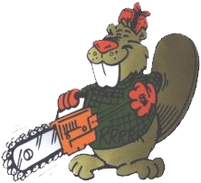

The Loop Bounds

If you've ever bought a new appliance (like a chain-saw, maybe), the first thing you need to learn is how to turn it off. That's where you should always start writing your loops; ask yourself: What will make this loop quit?
Making sure your loops quit at the right point is the single most important thing that you can do. Let's take our example with the loop bounds written in pseudocode.
// Step 1: Establish the loop bounds
// Before the loop
while letter is not a period
{
// inside the loop
}
// After the loop
 This course content is offered under a
CC
Attribution Non-Commercial license. Content in this course
can be considered under this license unless otherwise noted.
This course content is offered under a
CC
Attribution Non-Commercial license. Content in this course
can be considered under this license unless otherwise noted.